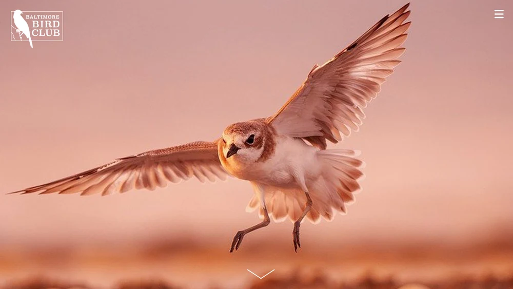
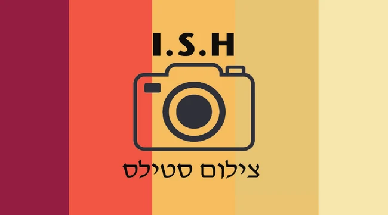
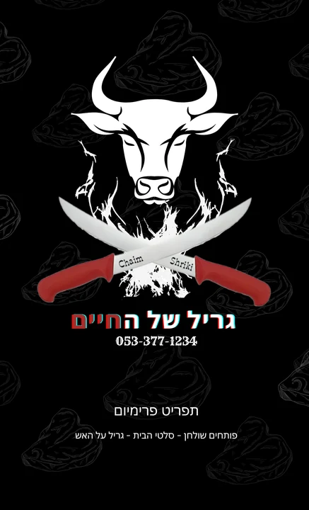
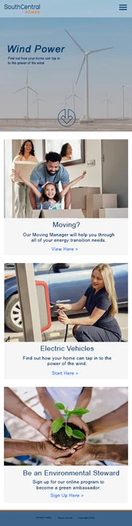
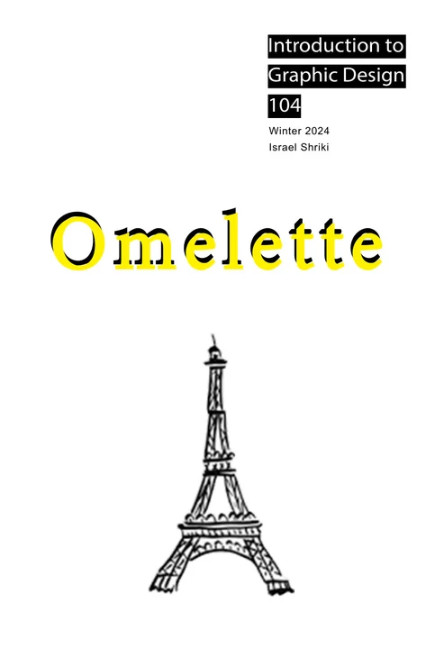

Srulik Shriki · Design portfolio
Graphic Design & Communication
I design visual identities, print materials, and digital experiences that make information easier to understand.



Selected work.
01 / Brand identity
Chaim’s Grill
A barbecue identity across logos, apparel, and Hebrew menus.

02 / Print design
I.S.H Stills Photographer
A business card redesign informed by feedback on contact details and QR scanning.


03 / Digital design
Web Design
Website concepts, responsive layouts, and digital banners.
04 / Editorial design
Layouts
Book, magazine, and poster layouts that explore type and composition.

About
Hey, I’m Srulik.
My background in graphic communication shapes how I organize information and bring ideas to life across print and digital media.